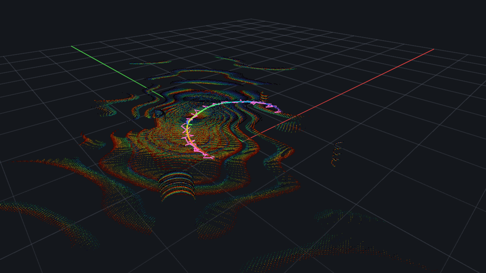

Replaying ROS 2 bags
replay("flight_2026_11_20/") # rosbag2 directory or .mcap file; opens a viewer and playsOr, step by step:
p = open_bag("drive.mcap"; history = 4.0) # seconds of scans kept on screen
p.bag # topics, types, message counts
seek!(p, 12.5); play!(p)
open_viewer(p.scene; player = p)
examples/replay.jl: a recorded rover bag at t = 12 s. LiDAR scans are placed through the TF chain map → odom → base_link → lidar at their own timestamps. The odometry trail is colored by time, the GNSS fixes (pink) are anchored to it, and the green line is the current plan.
A native MCAP reader handles uncompressed, zstd and lz4 chunks and needs no ROS installation. Each topic type is drawn like this:
| Topic type | Drawn as |
|---|---|
tf2_msgs/TFMessage (/tf, /tf_static) | the frame tree, interpolated (slerp) at each message's stamp |
sensor_msgs/PointCloud2 | streaming cloud colored by scan age. Reads float32/float64 xyz, any-type intensity, packed RGB; ring becomes the class |
nav_msgs/Odometry, geometry_msgs/PoseStamped | trajectory colored by time, plus an axes marker at the interpolated current pose |
nav_msgs/Path | the latest plan at the current time |
sensor_msgs/NavSatFix | ENU track whose first fix is anchored at the robot's pose |
The fixed frame is map, world or odom (whichever exists), else the root of the TF tree; fixed_frame = overrides it.
Real recordings are often incomplete, and the player is built for that:
- Sensor frames missing from TF (typically when
/tf_staticwas published before recording started) are drawn at the robot's base frame, with a warning. Give the real mountings withopen_bag(bag; static_transforms = [StampedTransform(0, "base_link", "lidar_front", Vec3d(1.2, 0, 1.8), Quat())]), or choosemissing_frames = :origin/:skip. - Recording gaps break trails instead of drawing straight jumps, and TF is only interpolated across gaps up to
max_tf_gapseconds (default 2). - Sparse or throttled LiDAR topics:
history = :autokeeps enough scans on screen for the sparsest one. - Data recorded in bursts: with
skip_gaps = true(default) playback jumps over stretches with no messages.MCAPWriterand the
encode_* functions write bags from Julia: examples/replay.jl records its demo bag this way.
SpatialRender.replay — Function
replay(path; kwargs...) -> ViewerOpen a ROS 2 bag and replay it in a viewer window (playing from the start). Keyword arguments go to open_bag; title, width, height to the viewer.
SpatialRender.open_bag — Function
open_bag(path; scene=Scene(), fixed_frame=nothing, topics=nothing, cloud_capacity=2_000_000,
history=3.0, intensity_range=nothing, marker_size=nothing) -> BagPlayerOpen a ROS 2 bag (an .mcap file or a rosbag2 directory) for replay into scene and add a layer per supported topic:
| message type | shown as |
|---|---|
sensor_msgs/PointCloud2 | streaming cloud, each scan placed via TF at its stamp |
nav_msgs/Odometry, PoseStamped | full trajectory + an axes marker at the current pose |
nav_msgs/Path | the latest path at the current time |
sensor_msgs/NavSatFix | ENU track, first fix anchored at the robot's pose |
/tf and /tf_static build the frame tree. Everything is drawn in fixed_frame (default: map, world, odom, else the tree's root). history seconds of scans stay visible (:auto: enough for the sparsest point cloud topic, 3–30 s). Sensor frames missing from TF (typically when /tf_static was not recorded) are drawn at the robot frame with missing_frames = :robot (or untransformed with :origin, or not at all with :skip); give the real mountings with static_transforms = [StampedTransform(...)]. TF is interpolated only across gaps up to max_tf_gap seconds. With skip_gaps, playback jumps over stretches with no messages. topics restricts which topics are shown.
SpatialRender.seek! — Function
seek!(player, t) -> playerJump to log time t (nanoseconds; or a Float64 in seconds from the start). Short forward jumps continue playback; anything else rebuilds the streaming layers from the last history seconds before t.
SpatialRender.tick! — Function
tick!(player, dt) -> playerAdvance playback by dt wall-clock seconds × rate (no-op while paused). Stops at the end, or wraps when player.loop is set.
SpatialRender.open_mcap — Function
open_mcap(path) -> MCAPFileOpen an .mcap file, or a rosbag2 directory. A directory may hold a split recording (several .mcap files, as ros2 bag record --max-bag-size writes); all of them are read, in the order metadata.yaml lists them (else by name), into one time-sorted index.
SpatialRender.MCAPWriter — Type
MCAPWriter(path; profile="ros2", compression="zstd", chunk_size=1 << 20)Write an MCAP file: add_schema!, add_channel!, write_message!, then close. Messages are grouped into chunks compressed with compression ("zstd", "lz4" or "").
SpatialRender.FrameTree — Type
FrameTree(; max_gap=2.0)Frames and their transforms over time, filled from /tf and /tf_static (see add_transform!) and queried with lookup_transform. Between two samples more than max_gap seconds apart (a recording gap), the nearest sample is used instead of interpolating motion that wasn't recorded.
SpatialRender.lookup_transform — Function
lookup_transform(tree, target, source, t) -> Union{Rigid, Nothing}Transform taking points in frame source to frame target at time t (nanoseconds), or nothing when the frames are not connected.
SpatialRender.decode_pointcloud2 — Function
decode_pointcloud2(d; intensity_range=nothing) -> (stamp, frame_id, Vector{PointVertex})Decode a sensormsgs/PointCloud2. Uses the x, y, z fields (float32 or float64), intensity (any numeric type; normalised by `intensityrange, default 255 for floats and the type's maximum for integers),rgb/rgba(packed) andring` (stored as the classification, so class colouring shows LiDAR rings). Non-finite points are dropped.